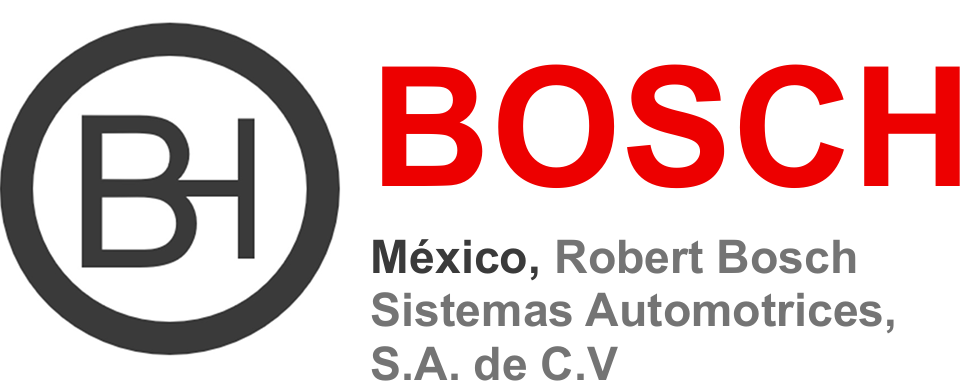
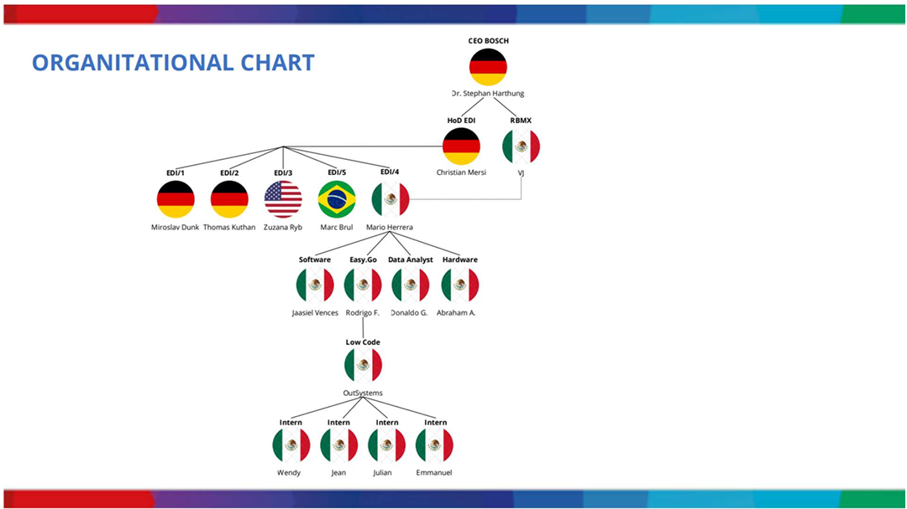

PROPUESTA SGSI – ROBERT BOSCH MÉXICO
Proyecto Final | Equipo 02
01 Alcance
¿Qué tan seguro es el software que desarrollas hoy? En entornos de desarrollo ágil como OutSystems, cada despliegue sin un marco de control es una puerta entreabierta para amenazas complejas. Este documento presenta la propuesta de un Sistema de Gestión de Seguridad de la Información (SGSI) basado en el Anexo SL de las normas ISO/IEC.

Representación del Proyecto SGSI para Robert Bosch San Luis Potosí.
1.1 a 1.4 Contexto Empresarial
- Empresa: Robert Bosch México Sistemas Automotrices, S.A. de C.V.
- Dirección: Eje Central 245, Zona Industrial, 78395 San Luis Potosí, S.L.P., México.
- Misión: Ofrecer soluciones tecnológicas a los retos actuales, promoviendo el equilibrio social y ecológico, innovación, seguridad y eficiencia.
- Visión: Estrategia "New Dimensions", centrada en la creación de valor, sostenibilidad, movilidad y eficiencia energética.
- Área de alcance: Electronic Data Interchange (EDI/4) - Departamento Easy.Go.
1.5 Propuesta de SGSI
Establecer, implementar, mantener y mejorar continuamente un marco de protección de la información conforme a la familia ISO 27000 (particularmente ISO/IEC 27001 e ISO/IEC 27002), para salvaguardar la confidencialidad, integridad y disponibilidad de los activos de información en el ciclo de vida del desarrollo de software mediante la plataforma OutSystems (Low-Code).
1.6 Organigrama de la empresa

Estructura organizacional de Robert Bosch México (EDI/4).
02 Referencias Normativas
| Norma ISO | Descripción e Implementación en el SGSI |
|---|---|
| ISO/IEC 27000 | Principios, conceptos y definiciones fundamentales (vocabulario). |
| ISO/IEC 27001:2022 | Requisitos de los SGSI. Marco contra el cual se evaluará la conformidad del departamento Easy.Go. |
| ISO/IEC 27002:2022 | Guía de referencia para selección de controles de seguridad (accesos e identidades). |
| ISO/IEC 27034 | Marco para integrar la seguridad en el ciclo de vida del desarrollo de software (OutSystems seguro por diseño). |
| ISO/IEC 27005 | Directrices para identificación, análisis y tratamiento de riesgos de seguridad. |
| ISO/IEC 27031 | Preparación de las TIC para la continuidad del negocio y resiliencia ante incidentes. |
03 Términos y Condiciones
- Activo de Información: Datos con valor para EDI/4 (código fuente OutSystems, bases de datos, credenciales).
- Confidencialidad, Integridad y Disponibilidad (CIA): Pilares fundamentales de la seguridad.
- Riesgo de Seguridad: Efecto de la incertidumbre sobre los objetivos (Probabilidad x Amenaza x Vulnerabilidad).
- OutSystems (Low-Code): Plataforma de desarrollo de alta productividad, entorno tecnológico principal.
04 Contexto de la Organización
Se identificaron los siguientes activos críticos dentro del alcance del SGSI:
Activos Internos
- Personal EDI, Laptops, Móviles full-time.
- Gestor de bases de datos e Información.
- Aplicaciones y Plataforma OutSystems.
- Almacenamiento físico/nube y Respaldos.
- Control de versiones.
- Routers, Switches, Firewall, Servidores Cisco.
- Cámaras, Controles de acceso físico/lógico, VPN.
Activos Externos
- Proveedores Cloud (SaaS, IaaS, PaaS).
- Redes VAN (EDI) y Conexiones B2B.
- APIs y Webhooks externos.
- Consultores, MSSP/SOC y Soporte remoto.
- Librerías Open Source y Repositorios públicos.
- Proveedores IdP, CDNs y Custodia off-site.
05 Liderazgo y Políticas
Política General: Activos Internos
Objetivo: Garantizar confidencialidad, integridad y disponibilidad en la infraestructura interna EDI/4.
- Bases de Datos (DBMS e Información): Clasificación obligatoria. Cifrado AES-256 para datos confidenciales. Acceso estrictamente controlado mediante Autenticación Multifactor (MFA).
- Servidores Físicos y Respaldos: Acceso biométrico al Site. Instalación de SO "Core". Cumplimiento de regla de respaldo 3-2-1 con retención inmutable de 30 días.
- Almacenamiento (Nube y USBs): Buckets en nube con bloqueo de acceso público. Prohibición de USBs personales; configuración GPO a "Solo lectura" para dispositivos no registrados.
- Dispositivos (Laptops y Móviles): Discos cifrados, EDR instalado. Bloqueo de sesión a los 5 minutos. Dispositivos móviles gestionados vía MDM con PIN numérico o biometría forzada.
- Control de Versiones y VPN: Prohibido commits directos a main (requiere Pull Request). Accesos externos exclusivos por cliente VPN Cisco con MFA y túnel dividido bloqueado.
Política General: Activos Externos
Objetivo: Mitigar riesgos en la cadena de suministro y entidades fuera del perímetro de EDI/4.
- Proveedores Cloud y VAN: Exigencia de SOC 2 Tipo II o ISO 27001. Transacciones EDI vía AS2/SFTP con cifrado TLS 1.2+.
- APIs, Webhooks y Librerías: Prohibido API Keys en texto plano (uso de Secret Vault). Análisis de composición de software (SCA) obligatorio; bloqueo en CI/CD si CVSS > 7.0.
- Redes B2B y Consultores: VPNs finalizan en DMZ. Cuentas externas con expiración automática desde su creación (Principio de menor privilegio).
- MSSP y Soporte Remoto: Enmascaramiento de datos PII antes de enviar logs al SOC. Soporte de terceros estrictamente vía plataforma PAM con sesiones grabadas en video.
- Custodia Off-site e IdP: Cintas magnéticas cifradas en AES-256 con cadena de custodia. Proveedores de Identidad vía SAML 2.0 / OIDC con Geo-blocking activado por defecto.
Matriz RACI de Seguridad (Extracto)
| Política | Project Manager | Team Lead | Developer | Tester | Stakeholder |
|---|---|---|---|---|---|
| Información en bases de datos | A (Aprobador) | R (Responsable) | C (Consultado) | - | I (Informado) |
| Gestor de BD híbridas (DBMS) | I | A | I | I | I |
| Control de versiones (OutSystems/Git) | I | A | I | I | I |
| Bibliotecas y dependencias de terceros | I | A | R | C | I |
| Proveedores de Identidad (IdP) | A | R | C | I | C |
06 Planificación (Matriz de Riesgos)

Mapa de calor y evaluación probabilística de riesgos.
Tabla de Detalle de Riesgos (Top Críticos)
| ID | Activo / Política | Riesgo a prevenir | Nivel de Riesgo | Acción de la Política (Mitigación) |
|---|---|---|---|---|
| INT-1 | Bases de datos | Fuga o robo de información confidencial en texto plano. | 20 (Extremo) | Cifrado AES-256 y clasificación. |
| INT-4 | Almacenamiento Nube | Exposición accidental de datos corporativos a internet. | 20 (Extremo) | Bloqueo de acceso público e IaC. |
| INT-5 | Respaldos (Backups) | Pérdida irrecuperable por ransomware o desastres. | 20 (Extremo) | Regla 3-2-1 e inmutabilidad. |
| EXT-8 | Dependencias Software | Explotación de vulnerabilidades heredadas (Cadena de suministro). | 20 (Extremo) | Análisis SCA, bloqueo por CVSS > 7.0. |
| INT-6 | USB / Físico | Infección por malware e infiltración/exfiltración. | 16 (Muy Alto) | GPO solo lectura, USBs cifradas. |
| INT-10 | VPN Cisco | Interceptación de tráfico remoto o acceso no autorizado. | 16 (Muy Alto) | Túnel cifrado sin división, MFA. |
| EXT-3 | APIs y Webhooks | Abuso de consumo, ataques DDoS. | 16 (Muy Alto) | Rate limiting, Bóveda de secretos. |
07 Soporte
7.1 Minuta de Concientización en Seguridad de la Información
| Empresa: | Robert Bosch Sistemas Automotrices |
| Departamento: | Easy.Go – EDI/4 |
| Tema: | Concientización sobre Seguridad de la Información y SGSI |
| Fecha: | 15 de mayo de 2026 |
| Hora: | 10:00 AM – 10:46 AM |
| Lugar: | Sala de juntas EDI/4 / Microsoft Teams |
| Responsable: | Departamento de Ciberseguridad UPSLP |
| Moderadores: | Diego López Castro, Hazel Mario Ávalos Rangel |
Objetivo de la reunión
Concientizar al personal del departamento EDI/4 sobre la importancia del Sistema de Gestión de Seguridad de la Información (SGSI), así como reforzar buenas prácticas de seguridad para proteger la confidencialidad, integridad y disponibilidad de la información corporativa.
Temas tratados
- Introducción al SGSI: Definición, ISO/IEC 27001, Riesgos.
- Políticas: VPN Cisco, Contraseñas, MFA, Control de acceso.
- Riesgos comunes: Phishing, Robo de credenciales, USBs, Fuga de información.
- Buenas prácticas: Bloquear equipos, No compartir accesos, Reportar incidentes.
- Responsabilidades: Cumplir políticas, Participar en capacitaciones, Proteger activos.
Acuerdos establecidos
| Acuerdo | Responsable | Fecha |
|---|---|---|
| Capacitación anual phishing | TI / Seguridad | Semestral |
| Revisión de accesos | Team Leads | Trimestral |
| Validación de MFA | TI | Inmediato |
| Simulacros de incidentes | Seguridad Informática | Próximo trimestre |
// MATERIAL DE PRESENTACIÓN INFORMATIVA //
08 Operación
Dentro de las 20 políticas establecidas, la política sobre el uso de los teléfonos móviles del personal full-time establece: "Los dispositivos móviles que procesen o accedan a datos del departamento EDI deben ser gestionados de manera segura." Esto debido a que si se llega a hacer un mal uso se puede lograr una escala de privilegios mediante el dispositivo móvil hacia la red del sistema u otros dispositivos de la empresa.
La línea base de la política menciona: "La política del MDM forzará un código de desbloqueo (PIN) mínimo de 6 dígitos numéricos o autenticación biométrica de forma predeterminada."
Configuración Operativa (FaceID & Passcode)
- Ingresar a la aplicación de configuración en el dispositivo.
- Seleccionar la opción FaceID & Passcode.
- Activar el FaceID y realizar la prueba para la configuración del biométrico.
- Seleccionar la opción de agregar un passcode e ingresar el código de 6 dígitos de preferencia.


Evidencia de configuración biométrica en dispositivos móviles administrados por el MDM corporativo.
8.1 Planificación y control operacional
El departamento EDI/4 planifica, implementa, controla, supervisa y revisa los procesos necesarios para cumplir con los requisitos de seguridad de la información establecidos en el SGSI.
- Criterios para los procesos: Procedimientos documentados con criterios de aceptación.
- Control de cambios planificados: Evaluación del impacto en la seguridad antes de cualquier implementación o modificación de infraestructura o OutSystems.
- Procesos externalizados: Control estricto de servicios SaaS, proveedores VAN y soporte remoto de terceros.
- Documentación de la información: Mantenimiento de registros de acceso, logs SIEM, actas y reportes.
09 Evaluación del Rendimiento
Checklist de Auditoría Interna del SGSI
Auditoría interna evaluando 20 políticas y controles clave basados en ISO/IEC 27001.
| No. | Política / Control de Seguridad | Estado | Evidencias / Observaciones (Hallazgos) |
|---|---|---|---|
| 1 | Política General: Aprobada y comunicada. | Cumple | Documento firmado. Boletín interno 15/01/2026. |
| 2 | Revisión de Políticas anual. | No Cumple | Política de teletrabajo sin actualizar por 18 meses. |
| 3 | Roles y Responsabilidades asignados. | Cumple | Matriz RACI en intranet corporativa. |
| 4 | Seguridad en Proyectos (Security by Design). | Parcial | 2 de 5 proyectos omitieron evaluación inicial. |
| 5 | Inventario de Activos actualizado. | Cumple | Plataforma GLPI coincide en 98%. |
| 6 | Clasificación de la Información. | No Cumple | Reportes financieros sin etiqueta "Confidencial". |
| 7 | Borrado Seguro y Destrucción. | Cumple | Actas de destrucción magnética (Folio #8472). |
| 8 | Principio de Mínimo Privilegio. | Cumple | No hay usuarios operativos en Domain Admins. |
| 9 | MFA y VPN. | Cumple | 100% accesos VPN exigen validación. |
| 10 | Gestión de Altas y Bajas. | No Cumple | 2 cuentas de ex-empleados activas por >72h. |
| 11 | Monitoreo de Accesos. | Cumple | Bloqueo tras 5 intentos fallidos comprobado. |
| 12 | Control de Acceso Físico en CPD. | Cumple | Lectores biométricos y cámaras operativas. |
| 13 | Regla de Backup 3-2-1. | Cumple | Copias inmutables en AWS S3 verificadas. |
| 14 | Pruebas de Restauración (Disaster Recovery). | No Cumple | No existe evidencia de simulacro en el último año. |
| 15 | Protección Endpoint (EDR). | Cumple | 99.5% de equipos con CrowdStrike óptimo. |
| 16 | Cifrado AES-256 en Laptops. | Cumple | BitLocker activo por GPO. |
| 17 | Gestión de Vulnerabilidades y Parches. | Cumple | Nessus sin críticos; WSUS desplegado. |
| 18 | Plan de Respuesta a Incidentes. | Cumple | CSIRT interno conformado y actualizado. |
| 19 | Firma de NDA. | Cumple | 100% en muestreo aleatorio de RRHH. |
| 20 | Campañas de Concientización y Phishing. | Parcial | Campaña de simulacro con 1 año de atraso. |
10 Mejora (Gestión de Incidentes)
10.1 Descripción del Incidente: ¿Qué sucedió?
El día de ayer, un colaborador del equipo EDI/4 fue víctima del robo de su laptop corporativa mientras laboraba remotamente en una cafetería pública. El colaborador se levantó a atender una llamada dejando el equipo encendido y desbloqueado. Existió una ventana de riesgo crítica donde un tercero pudo acceder a información antes del bloqueo automático de pantalla.
10.2 Análisis de Causa Raíz
- Falla en Seguridad Física: Violación a los principios de custodia de activos en espacios públicos de alto tránsito. Vacío en la concientización sobre ingeniería social presencial.
- Brecha en Línea Base: El bloqueo a los 5 minutos permitió que el equipo fuera sustraído con la sesión activa, neutralizando temporalmente la protección de primer nivel (cifrado de disco).
- Efectividad Reactiva: El protocolo de respuesta funcionó. El reporte en la primera hora permitió contener la brecha mediante borrado remoto antes de una extracción prolongada de datos.
10.3 Cronología del Incidente
10.4 Plan de Acción Preventivo
Aunque los controles técnicos reactivos (EDR, Wipe) funcionaron, se ajustarán las políticas preventivas:
- Actualización de Línea Base: Reducir el tiempo de bloqueo de pantalla de 5 a 3 minutos.
- Formación Obligatoria: Inclusión del módulo de "Seguridad Física de Activos" y adopción mandatoria del atajo manual de bloqueo (Windows + L) al alejarse del equipo.
// MATERIAL: GESTIÓN DE INCIDENTES //
11 Conclusión de la propuesta
La estructuración de esta propuesta técnica demuestra que el diseño de un SGSI bajo las directrices de ISO/IEC 27001 no debe verse como una limitante burocrática, sino como un habilitador tecnológico crítico. Al aterrizar el marco normativo internacional al contexto de la trinchera operativa del área EDI/4, se logra blindar un ecosistema de alta velocidad como es el desarrollo Low-Code en OutSystems sin mermar su agilidad característica.
El aprendizaje fundamental radica en que el gobierno corporativo de la seguridad exige una granularidad técnica estricta: desde la inmutabilidad de los logs transaccionales en un DBMS hasta el blindaje de los flujos de control en la cadena de suministro de software externo. La ciberseguridad efectiva no depende de herramientas aisladas, sino de la estricta cohesión entre políticas claras, procedimientos reproducibles y una sólida cultura organizacional de cumplimiento.
12 Referencias Bibliográficas
- International Organization for Standardization. (2022). Information security, cybersecurity and privacy protection — ISMS — Requirements (ISO/IEC Standard No. 27001).
- International Organization for Standardization. (2022). Information security controls (ISO/IEC Standard No. 27002).
- Robert Bosch Sistemas Automotrices. (2026). Global Directives on Security of Information and Data Protection. Corporate Network Division.
- OutSystems Platform. (2025). Secure Architecture and Cloud Governance Implementation Guide. Product Security Operations.
- RocketReach. (s.f.). Bosch México Marketing Department | Bosch México Marketing Team.
- The Official Board. (2026). Bosch Org Chart + Executive Team.